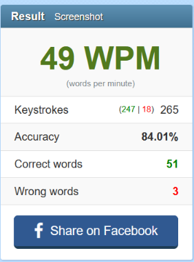
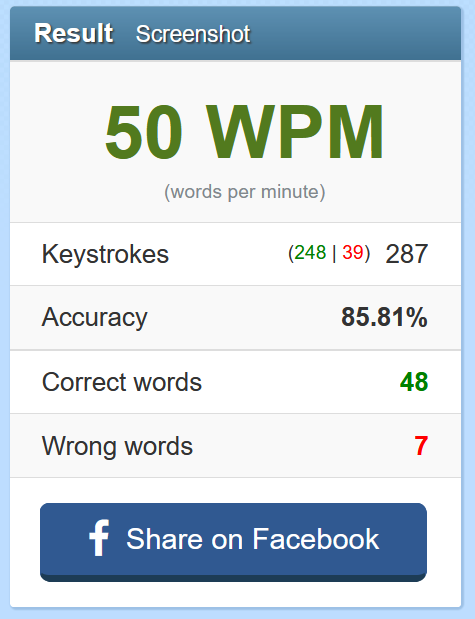

Typing. The most fundamental skill of doing the computer things. Majoring in Informatics Engineering, I primarily work with computers, and one who does, will do a LOT of typing.
There is a problem though. I am not particularly fast at typing. Playing some games that primarily requires typing, I was very impressed with how people could type in 80+ WPM. It feels like black magic. But turns out, it's all about the technique.
The usual way I would type is primarily using my index and middle fingers, with the occasional typing with the ring finger and thumb (mostly around 4-6 fingers). I move my hands to where the keys is roughly in reach, and then tap it. With my usual technique, I tried out the typing test inhttps://10fastfingers.com/typing-test/english, however, the results I got is not ideal...

The problem I have with my usual way is that there's a lot of seeking around for the desired keys, consuming quite some time. One other thing is the large amount of hand movement, which is somewhat exhausting.
Thankfully, there is a better method. One of which is called "Touch Typing", a technique that allows you to type without looking at the keyboard.
The way it works is that you have "Home keys", where your fingers would rest. "ASDF" on the left pinky, ring, middle, and index fingers respectively. On the right hand, it's "JKL;" for the right index, middle, ring, and pinky fingers. Thumbs go to the spacebar. With muscle memory, you can locate the keys you need based on where your fingers are and use the closest finger to type it. Compared to hovering your hands around, this is way more efficient.
The resource I used to learn and practice the "Touch Typing" method is https://www.typingtest.com/trainer/. Since I don't usually use this method, I initially struggled at it. But I see that with practice, it'll definitely increase my typing skills.
Here's how the 10fastfingers test went with the touch typing

Though I still struggle on accuracy and speed since I'm not used to it, I did notice that I tend to type words faster with the touch typing method.
Remember, practice makes perfect